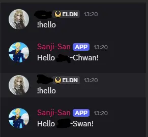
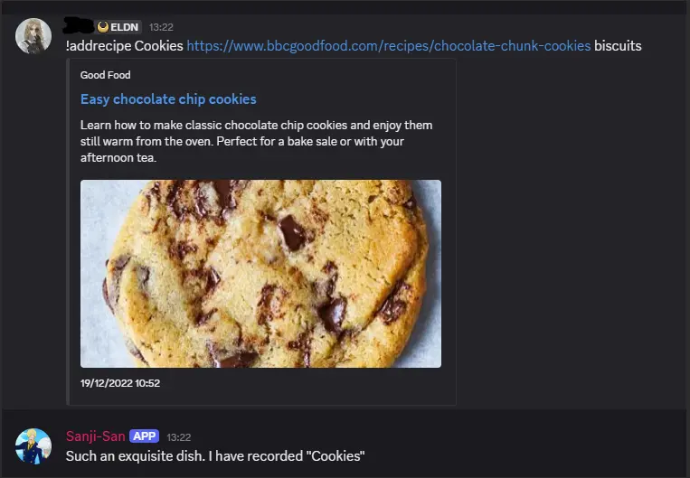
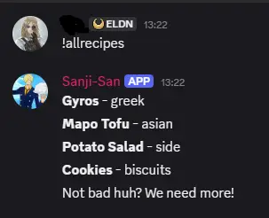
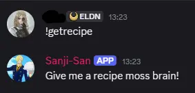
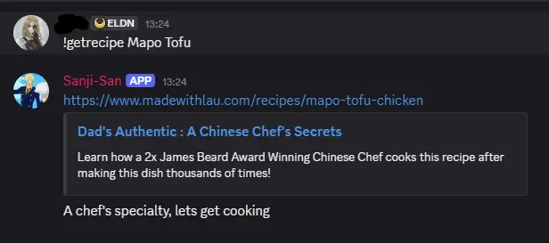
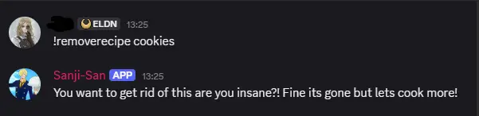
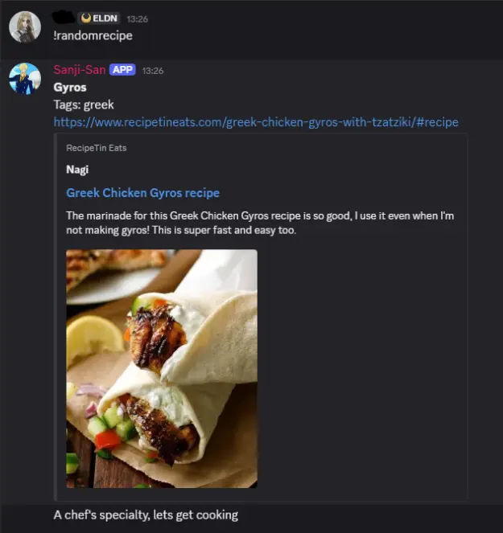

Discord bot: Sanji-San
Conor Kirkby







Click to Enlarge
Quick Note:
This is a project only intended for private use, I do not own any of the images or recipes and do not claim them, thank you to the talented people who create the things I can use
TLDR
- Discord bot that stores recipes
- Learned how to set this up using discord library in python
- Using json files to create a local database of recipes
- Can store recipes through the use of storing URL's to the online recipe into the json file
- Can recieve recipes either specifically, random per tag, or completely random
- Can remove specific or delete all recipes at once
- Fun hello command that quotes the character
What Happened
This was a fun little side project that I wanted to do for a long time. I frequently cook for myself and my partner and I usually use discord to save recipes I find on the internet. I wanted to make a bot that stored those recipes for me and then I cloudflare recieve a recipe either at random or by asking the bot to provide me with the url.
One Piece is one of my favourite animes, so of course I had to model the bot based on Sanji, it just made sense. I will use this bot in private to keep track of my recipes and now I have learned so maybe I could make some more bots in the future.
Problems that arose
- As I primarily use C++ or C#, Python was an extreme difference to me and I was really struggling to understand the syntax. I have since gotten my head around it but this was a primary cause of not understanding how the functionality works.
- I originally tried to use a .env file to store the discord token needed for the bot to run. However despite apparently that I correctly set it up and quadrouple checked this, the .env file still would not load the token, thus I switched the system to simply use a config.py file instead.